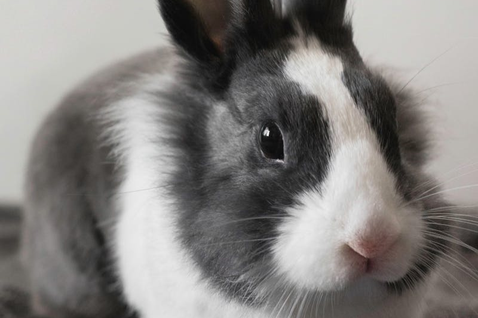
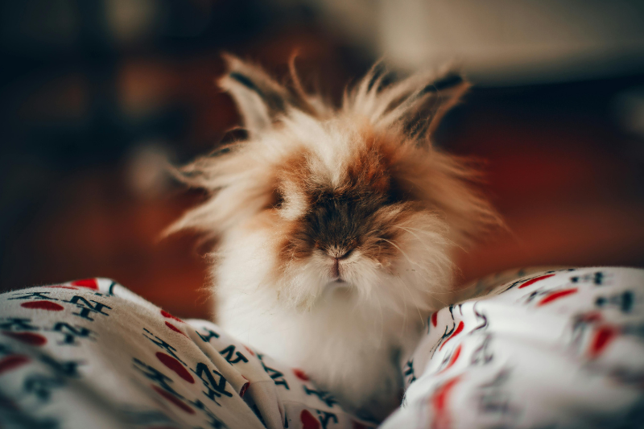
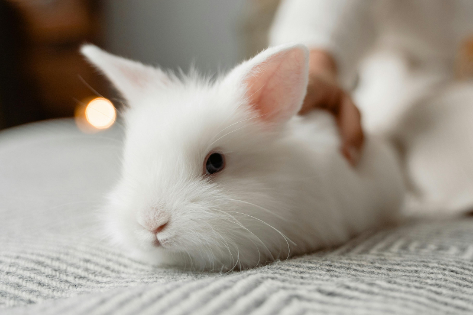

獅子兔脖子四周有一圈長毛，如同獅子的鬃毛，身體部分四周長有一圈裙子毛，頭頂的長毛如同劉海一般，可以供主人隨心所欲改變造型。 蓬鬆毛髮讓獅子兔遠看顯得帥氣、近看又帶有一點可愛呆萌，是外型特別又十分討喜的人氣品種！
獅子兔活動力十足，較不怕生，好奇心旺盛，很適合跟主人出門野餐社交，因此也需要多一點陪伴和活動空間才能滿足獅子兔精力旺盛的活動力喔！
獅子兔因為脖子四周有一圈長毛，因此眼睛比較容易因毛髮細菌引起感染。 換毛季節也需要注意兔兔的梳毛與整潔維持、以防打結。 獅子兔屬長毛兔，舔毛後產生毛球症的機率較高，需要多食用化毛膏、木瓜酵素和大量牧草！
作者的話： 獅子兔呆萌的外型和毛茸茸的雙頰十分，看起來好像娃娃臉，一點都沒有獅子的＂威嚴霸氣＂！ 不管甚麼配色都十分有特色，毛髮長也很好修剪做造型，但是清潔上真的需要更費心打理喲！


© 本網站為緯育TibaMe【第94期】前端工程師專業技術養成班學員作品,僅供學習、展示之用途。